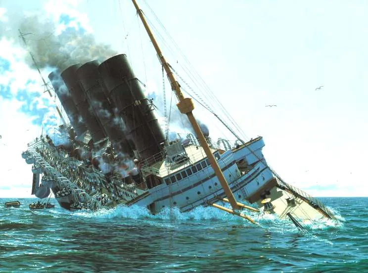
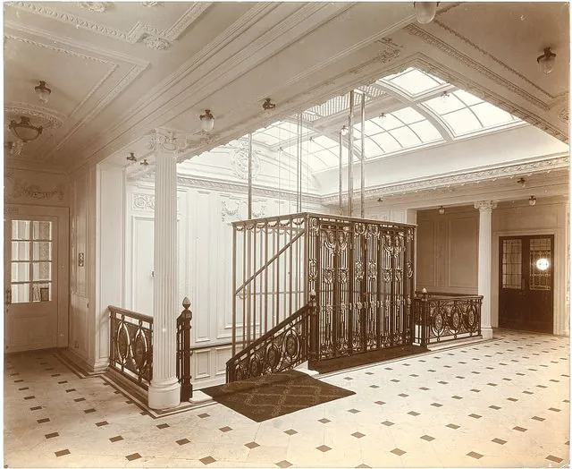
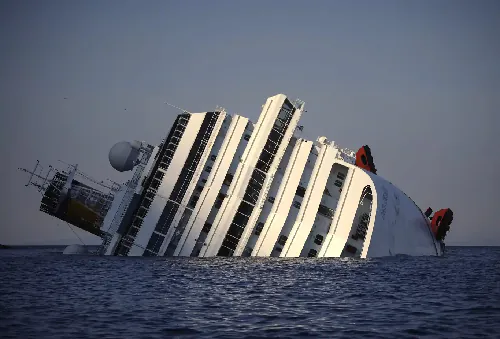

1915년 독일 잠수함의 어뢰에 맞아 18분만에 침몰해 미국의 제1차세계대전 참전의 계기 중 하나가 된
영국 여객선 RMS 루시타니아 침몰사건

생존자들의 증언에 의하면 당시 배 곳곳에 있는 엘리베이터를 타고 대피를 시도한 선원과 승객들이 있었는데
...하필이면 침몰 시작 4분만에 전력이 끊겼고 그대로 갇혀 익사했다고 한다.

코스타 콩카디아 침몰 사건때도 사망자 32명중 12명 가량이 엘리베이터에 갇혀 죽었다고 함.
영화 타워 엘리베이터씬이 참 좋았는데